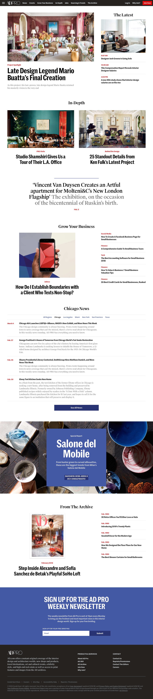
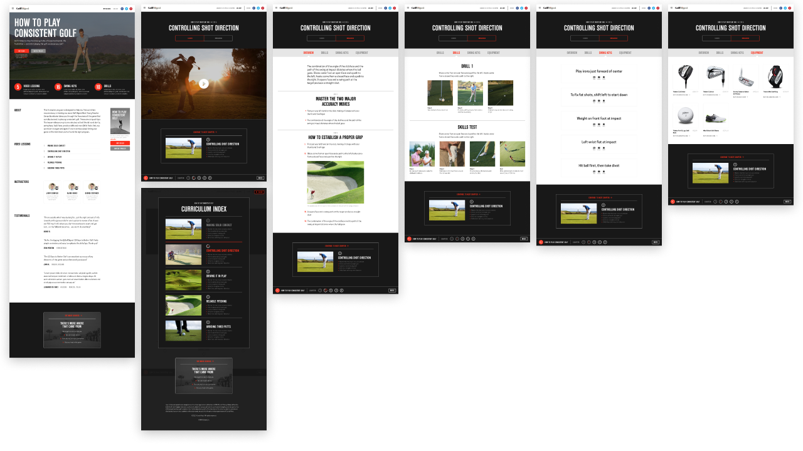

Work
Worked in a startup as a product associate. → Became a product designer. → Built consumer & enterprise apps for web & mobile. → Worked at my dream company building & designing products for the most renowned media brands in the world. → Led product, design, and operations.

Condé Nast’s universal multi-brand design system & architecture
Lead Designer, Verso Homepages
- Designed all components (40+ patterns with 150+ variations in total) for all discovery functionality (homepages, tag pages, search results pages, recirculation, etc.)
- Architected customization for each component per brand (e.g. styling configurations, responsive behavior, aspect ratios)
- Established the system for how to operate it in the back-end CMS in a few interactions
- Special thanks: Ben Smit, Mason Wendell, Greg Kilian, Jeff Morin, David Colucci, Gabriel Alves, Julianne Sombat, Tyler Reinhard.
- TV Segment: Cheddar: Glamour Gets Digital Makeover

Live example for Allure.

Live example for Teen Vogue.
Team Design Lead, Verso Design System
- Led strategy & operations for all system-wide and brand-specific design work. Accountable for 1) design success, and 2) team execution and morale.
- Key decision-maker for the design org partnering with product and engineering directors on where and how to deploy resources.
- Major partner with other stakeholders outside tech organization (editors, brand leads, marketing, biz dev, sales, etc.) who has an interest on the use and improvement of the system.
- Managed delivery from creating tickets to design to deployment.
- Special thanks: Gabriel Alves, Sarah Hood, Gillean Yuen, Liam Boylan, Jeremy Browning, Noah Robischon, Jason Sauser.

Deliverable: Scale system to all brands.

Deliverable: Design new concepts and possibilities to maintain spirit of inventiveness through a systems-based thinking. Visual designs by me.

Future homepage concept for WIRED.

Architectural Digest’s premium B2B subscription publication for interior design professionals
Product + UX, AD Pro
- Identified the best flows & content experiences based on unique B2B content strategy balancing them with system constraints.
- Designed new system components that can accommodate new user/business needs.
- Led product for the engineering team in delivery of the front-end: roadmap, build prioritization, creating all user stories, and assessing system tradeoffs.
- Established brand new CMS logic for editors to operate a new sub-brand and to curate brand new components.
- Special thanks: Adrian Harwood, Nelson Wallace, Lydia White, Zac Frank, Brandon Chang, Jeff Morin, Michael Warren, Fran Devinney.
- Press: Wall Street Journal: “Condé Nast, Seeking Extra Revenue, Turns to Professionals”

Deliverable: Brand new website with new components, new templates (channels, account management, etc.), new business model (B2B subscription) working on top of the Verso design system. Visual design by Adrian Harwood.

Visit the live website (4 free articles with email).

Golf Digest’s video instruction membership product to help golfers improve their game
- Do user research and combine learnings from strategy to come up with concepts.
- Craft entire end-to-end user experience, from the library, to the video section, to the learning tools, to purchasing.
- Prototype refined designs and create new model and syntax for creating classes via the CMS.
- Phase out delivery from MVP to full-service product.
- Special thanks: Adrian Harwood, Sarah Rowe, Joe Cera, Randi Eichenbaum, Jeff Morin, Michael Warren, David Colucci.
- Press: Digiday: “With Golf Digest, Conde Nast tees up first of several consumer marketing efforts”

Final: Video lesson page with learning tools, single class marketing pages, full educational portal and video library. Visual designs by Adrian Harwood.

Deliverable: Interactive video lesson page.